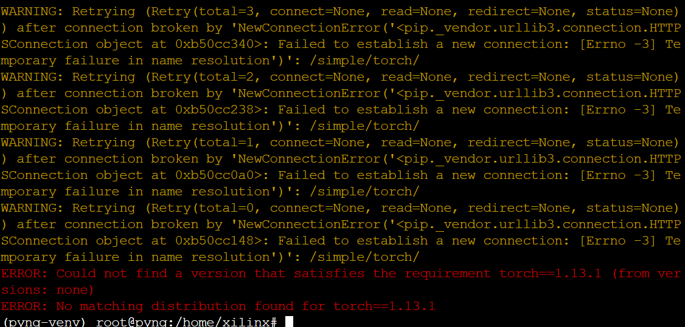
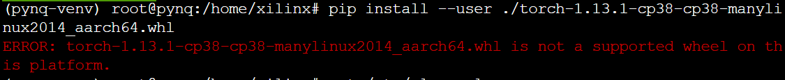
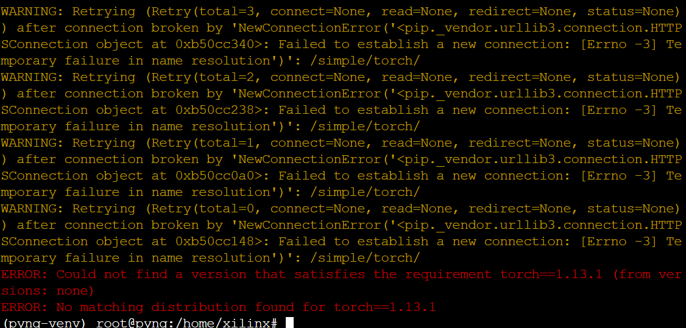
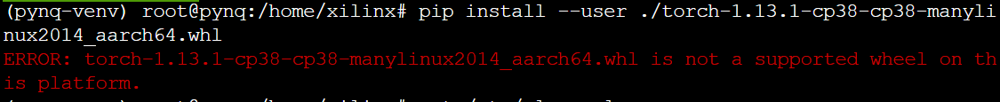

本篇用于对我的实验过程进行记录，不会包含详细的计算原理与设计细节，主要包含我遇到的问题、一些有用的解决方案地址、以及一些思考。
在PYNQ-Z2上安装PyTorch框架
参考Install PyTorch on PYNQ，我的PYNQ img版本是v2.7
 报错：

`pip install --user ./torch-1.13.1-cp38-cp38-manylinux2014_aarch64.whl`

平台不支持，尝试torch-1.11.0也不行，更换img版本到3.0.1，还是不行。
仔细看教程中的板子是PYNQ-ZU，而我的是PYNQ-Z2，芯片架构不同。
针对PYNQ-Z2也许没有合适的wheel。
报错：

`pip install --user ./torch-1.13.1-cp38-cp38-manylinux2014_aarch64.whl`

平台不支持，尝试torch-1.11.0也不行，更换img版本到3.0.1，还是不行。
仔细看教程中的板子是PYNQ-ZU，而我的是PYNQ-Z2，芯片架构不同。
针对PYNQ-Z2也许没有合适的wheel。
在PYNQ上安装TensorFlow
Xilinx-PYNQ_Z2系列-学习笔记（13）：在PYNQ-Z2上安装Keras/Tensorflow 库的方法
Tensorflow and keras on pynq z2从这篇帖子来看，会遇到很多困难。PYNQ-Z2是ARM32-bits 平台。
Tensorflow & Keras for PYNQ-Z2 v2.6.0?这篇帖子导向了另一个似乎有参考价值的方法，Running Google Machine Learning Library Tensorflow On ARM 64-bit Platform。想要成功安装Tensorflow或者安装高版本的tensorflow可能需要从source开始编译
Error install Tensorflow这是一篇非常有帮助的帖子，对于任何希望在PYNQ上安装高版本tensorflow的也许会有帮助。Pynq-Z1 与 Raspberry Pi 共享架构，所以任何在树莓派上的案例也许都有帮助。但是这仍然是一个困难的工作。

在PYNQ-ARM环境中基于ONNX运行神经网络
1、用C++重写yolov5，关键部分调用python。
2、
参考资料
在PYNQ-Z2上运行YOLOv5-s模型,同时将卷积计算部分offload到可编程逻辑(PL)端FPGA加速,建议的设计流程如下:
模型准备
- 在主机端(如PC)使用PyTorch框架训练YOLOv5-s模型
- 将训练好的PyTorch模型转换为ONNX格式,如yolov5s.onnx
使用hls4ml工具流将ONNX模型转换为HLS C++代码
1
hls4ml convert -i yolov5s.onnx -c cpp -g -n yolov5s
这会生成相应的HLS C++项目。
识别需要加速的卷积层
- 分析模型,识别出计算量大、需要加速的卷积层
- 修改HLS C++项目中对应层的计算函数,替换为自定义的PL IP核接口调用
自定义PL IP核设计
- 使用HLS或Verilog/VHDL设计高效的卷积计算IP核
- 考虑使用PYNQ板载的DSP硬核、存储资源等加速
- 进行综合、实现和比特流生成
硬件部署
- 在Vivado中打包PL IP核为IP packaged_kernel
- 使用PYNQ的overlay工具部署并连接overlay
软件集成
- 在PYNQ的Jupyter Notebook中安装ONNX runtime
- 编写Python代码加载ONNX模型
- 在推理代码中调用编译好的PL IP核执行卷积加速
性能评估和优化
- 评估端到端推理性能和加速比
- 根据需要进行模型压缩、量化等优化
- 探索pipeline、流水线等设计以进一步提升加速性能
这个设计流程的关键是利用hls4ml将ONNX模型转换为HLS C++代码,从而可以修改并插入自定义的PL IP核实现指定的计算层加速。同时也可以充分发挥PYNQ FPGA平台的异构加速能力。
需要注意的是,这种流程需要用户具备一定的FPGA开发经验,能够设计高质量的PL IP核。对于大型模型如YOLOv5-s,往往需要较大的开发量来实现端到端的硬件加速。另外,性能评估和模型优化也是非常关键的环节。
总的来说,尽管过程较为复杂,但通过合理的设计流程,在PYNQ上同时实现YOLOv5-s部署和PL FPGA加速是可行的,可以挖掘FPGA强大的并行计算能力,为边缘设备带来实时的高性能视觉计算能力。
在第6步，软件集成部分，为什么要编写Python代码加载ONNX模型，不是用hls4ml工具转成HLS，C++了吗
您提出了一个很好的问题。在该设计流程的第6步软件集成部分,编写Python代码加载ONNX模型和调用PL IP核,是一种可选的方式,但并不是必须的。
实际上,有两种主要方式可以集成自定义的PL IP核与模型推理:
使用ONNX Runtime的Python API
- 这需要在第6步编写Python代码,显式加载ONNX模型和PL IP核
- ONNX Runtime会在推理时自动调用代码中注册的PL IP核执行加速
- 优点是可以方便地挂钩Python预处理/后处理代码
- 缺点是需要编写额外的Python绑定代码,增加了开发复杂性
直接生成HLS C++核心与IP核集成
- 在第2步使用hls4ml将ONNX模型转换为HLS C++代码时
- 直接修改HLS C++项目,用PL IP核替换需要加速的层
- 重新编译生成加速过的整个模型进程
- 优点是集成无缝,无需编写Python绑定代码
-缺点是后续难以动态加载新的Python预处理/后处理代码
根据您的描述,我理解您更倾向于第2种直接在HLS C++代码级别集成PL IP核的方式。这是一种非常合理的流程,您不需要在软件集成步骤单独加载ONNX模型,而是在硬件综合阶段就完成了硬件加速部分的集成。
总的来说,这两种方式各有利弊,需要根据具体情况权衡选择。如果主要目标是模型推理加速,并且预处理/后处理相对固定,那么直接在HLS C++代码中集成会更高效。但如果需要更大的灵活性,使用ONNX Runtime则可以提供更多个性化定制的可能。无论选择哪种,实现自定义PL加速的设计思路是一致的。感谢您的提问,让我更清楚地理解了这部分的不同实现方式。
如果是第一种方法，那我要怎么在pynq-z2上编写推理代码呢
如果选择第一种方法,即使用ONNX Runtime的Python API在PYNQ-Z2上编写推理代码并集成自定义PL IP核,步骤大致如下:
在PYNQ-Z2上安装必要的Python包
1
2sudo pip3 install onnxruntime
sudo apt install onnx-simplifier获取已编译好的自定义PL IP核文件(如packaged_kernel.xclbin)并部署到PYNQ的overlay上
- 参考PYNQ的overlay教程加载.xclbin文件
在Jupyter Notebook中导入onnxruntime并创建InferenceSession
1
2import onnxruntime as rt
session = rt.InferenceSession("yolov5s.onnx")注册并加载自定义的PL IP核到InferenceSession
- 需要先用C++编写IP核的Python绑定代码
- 然后使用session.add_custom_op_library加载
准备输入数据并进行预处理
1
2
3import cv2
img = cv2.imread("test_image.jpg")
input_tensor = preprocess(img) # 用户自定义预处理函数在InferenceSession中运行模型推理
1
outputs = session.run(None, {session.get_inputs()[0].name: input_tensor})
对模型输出进行解码和后处理
1
detections = decode_outputs(outputs) # 用户自定义解码函数
可视化或保存最终的目标检测结果
这种方法的关键步骤是第4步,需要用C++编写自定义PL IP核的Python绑定代码,并正确加载到ONNX Runtime中。绑定代码的编写相对复杂,但ONNX Runtime提供了加载自定义算子的标准接口。
在运行时,ONNX Runtime会自动调用绑定的PL IP核执行加速计算,输入输出通过InferenceSession的run方法传递。
通过这种方式,既可以在PYNQ-Z2上使用Python代码控制整个推理过程的执行流程,又能在关键的算力层插入自定义的PL加速IP核,获得算力加速的好处。
当然,使用ONNX Runtime的方式增加了部分开发复杂度,主要在于编写绑定代码和加载PL IP核这一步。但相较于直接修改HLS C++代码,它提供了更好的灵活性和Python生态的兼容性。可以根据实际需求权衡选择使用哪种方式。
对于第二种方法：
好的,我详细解释一下如何使用第二种方法,即直接在HLS C++代码层面集成自定义PL IP核,在PYNQ-Z2上实现YOLOv5-s的推理过程。
- 使用hls4ml工具将ONNX模型转换为HLS C++项目
1 | hls4ml convert -i yolov5s.onnx -c cpp -g -n yolov5s |
这会生成一个yolov5s_prj文件夹,包含HLS C++代码。
- 修改HLS C++代码,集成自定义PL IP核
打开yolov5s_prj/firmware/nnet_utils目录,找到需要加速的卷积层对应的计算函数,如convolution.h中的conv_rf…函数。
用自定义的PL IP核接口替换这些函数,通常需要编写两部分:
- IP核封装函数,调用Vivado HLS生成的IP核接口
- 数据动态分区函数,在FPGA DDR与PL IP核间移动数据
如果是2D卷积,可以参考以下模板:
1 | // myconv2dpluscore.h |
上述代码为示例,需要根据实际IP核接口进行修改。可以重用Vivado HLS生成的接口代码。
- 使用Vitis统一软件平台编译HLS C++项目,生成xclbin文件
在Vitis中导入修改后的HLS C++项目,添加自定义PL IP核源文件。设置合适的约束并综合实现,生成xclbin部署文件。
- 在PYNQ Notebook中导入xclbin文件,使用hls4ml进行推理
1 | import hls4ml |
通过以上步骤,即可在PYNQ-Z2上实现包含自定义PL IP核加速的YOLOv5-s推理过程,无需额外编写Python绑定代码。当然,这种方式的灵活性相对较低,如果需要在推理前后插入Python预处理/后处理代码,则需要修改HLS C++代码并重新编译模型。
这种直接修改HLS C++代码的方法的关键在于正确替换原有计算函数为自定义IP核调用,并正确处理数据动态分区。对于大型模型,这可能需要大量的代码修改工作,但同时也最大限度地发挥了FPGA硬件加速的性能优势。
需要注意的是,以上仅为伪代码,实际使用时还需要根据具体情况调整实现细节,并进行全面的功能和性能验证。总的来说,这种在HLS层面集成PL IP核的方式更加底层和高效,但复杂程度也更高。
这种方法并不是将整个YOLOv5-s网络完全映射到FPGA的可编程逻辑(PL)上,而是采用了部分offload的策略。
具体来说:
大部分的网络层(如卷积、BatchNorm等)被hls4ml工具流转换为高效的HLS C++实现,运行在PYNQ的ARM处理系统(PS)端。
但是,对于计算量大且可以从FPGA并行计算中获益的关键层(通常是大的卷积层),我们手动将其替换为自定义的PL IP核调用。
这些自定义PL IP核利用FPGA的并行计算资源(DSP、LUT等)实现了高度优化和并行化的加速设计。
在执行推理时,大部分层由HLS C++代码在PS端执行,只有少数计算密集型层由PL IP核在FPGA硬件上加速执行,输入输出通过DDR传递数据。
这种策略兼顾了:
- 保留HLS C++实现的简单性,避免将整个大型网络手动移植到FPGA
- 对计算密集型层使用高度优化的PL IP核加速,充分利用FPGA的并行计算能力
如果完全不使用PL IP核,那么整个网络的执行都将在ARM CPU上进行,性能将受到较大限制。但如果完全将整个网络映射到FPGA,那无疑工作量会非常大,而且部分算力较轻的层在FPGA上执行未必会更快。
所以,合理的做法是在ARM CPU与FPGA之间寻找一个平衡点,对于计算密集型层offload到FPGA加速,其他层在CPU上执行。这样可以在开发复杂度和硬件加速性能之间取得很好的平衡。
当然,如果您对性能要求不是很高,或者更追求开发便利性,也完全可以暂时不使用PL IP核加速,先在PS端完成端到端的网络部署,之后再根据需要逐步加入PL加速部分。这两种设计思路各有特点,需要根据具体情况权衡选择。
对的,第二种方法就是需要专门考虑在PL端使用FPGA硬件资源对一些计算层进行加速。
具体来说,第二种方法的流程是:
- 使用hls4ml工具将ONNX模型转换为HLS C++代码项目
- 分析模型,识别出计算量大、需要加速的关键层(通常是大的卷积层)
- 针对这些需要加速的层,设计高效的PL IP核,利用FPGA的并行计算资源(DSP、LUT等)
- 修改HLS C++代码,将原有的计算函数替换为对应的PL IP核调用接口
- 使用Vitis工具流综合并生成包含PL IP核的xclbin部署文件
- 在PYNQ Notebook中导入xclbin,通过hls4ml库进行模型推理,此时会自动调用PL IP核执行加速
所以在这种方式下,专门针对需要加速的关键层设计PL硬件IP核是必须的环节。这不仅需要理解模型结构,还需要具备FPGA设计和优化的能力。
相比第一种方法通过软件绑定PL IP核,这种直接在HLS层面集成更底层、更高效,可以最大限度发挥FPGA硬件加速的潜力。但与此同时,它也有以下几个挑战:
- 工作量大,需要修改大量HLS C++代码
- 灵活性较低,难以动态插入Python预/后处理代码
- 需要对HLS C++代码和FPGA PL硬件设计都有深入理解
总的来说,第二种方法的核心就是在HLS层面直接集成自定义PL IP核,以换取更高的推理加速性能,但同时也付出了更高的开发复杂度和灵活性受限的代价。
相较之下,第一种方法更容易上手,可以先完成纯软件部署,后续再集成硬件加速;但性能上未必能达到第二种方法的优化程度。
所以在选择方案时,需要根据具体情况,权衡开发复杂度、灵活性和加速性能的取舍。两种方案均有其合理的适用场景。